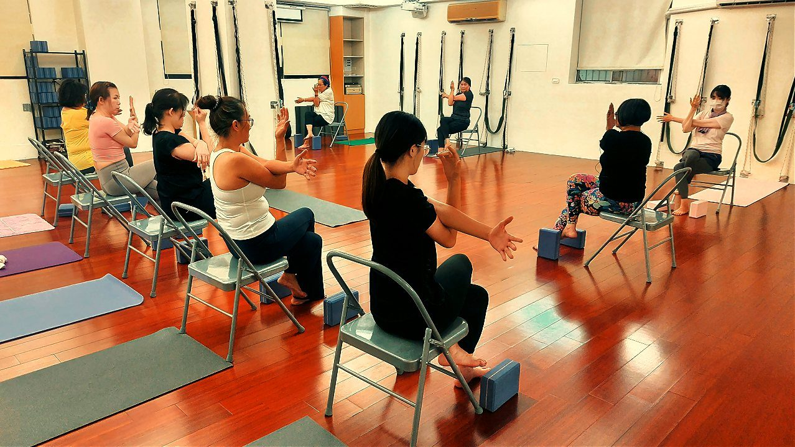
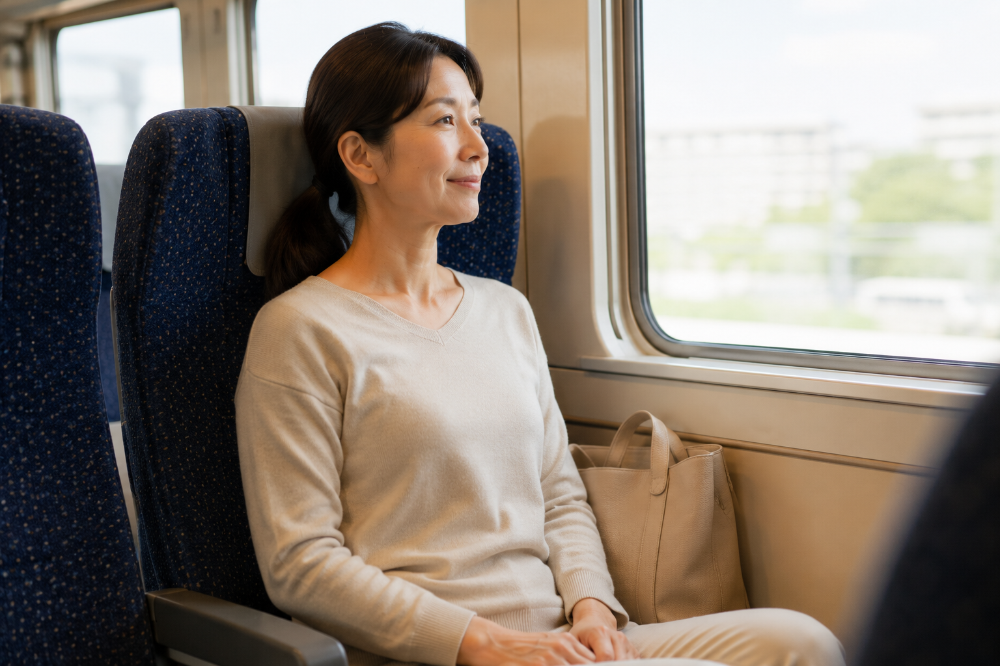

通勤族在車上就能做的姿勢微調

- 通勤常被視為無效死時間，但不良乘車姿勢往往是上午進辦公室就先累癱、肩頸發酸的隱形元兇。
- 坐姿通勤族痛點在於硬椅誘發「薦骨坐」骨盆後傾；站立族則常因「單手吊環懸吊＋三七步」破壞對稱力線。
- 坐姿利用「背包腰後支撐」重建腰椎前凸；站姿採「雙腳對稱微屈膝避震＋手肘微屈」啟動核心抗扭轉。
- 若乘車震動引發下肢電擊麻痛或腳掌下垂無力，切勿勉強硬撐，應立即前往醫療專科診治。
你有沒有這樣的切身體會：明明還沒走進辦公室展開繁重工作，光是捷運、公車或開車通勤的 30 到 50 分鐘，整個人就先累癱了一半？一坐進駕駛座或車廂座位，身體本能地下陷萎靡，脖子不由自主地往前伸長盯著手機螢幕；好不容易下了車，肩膀僵硬如石、下背酸楚難耐。通勤時段通常被當成無可奈何的消耗時間，但只要看懂車廂環境的動力學生理學，這段零碎時間就能轉變為阻斷代償的日常微調窗口。
通勤載具動力學：為什麼明明「只是坐著」，身體卻比走路還累？
搭乘大眾交通工具或開車時，人體處於持續的「動態低頻震動」與「加減速慣性剪切」環境中，骨骼肌肉系統必須在無意識中承受額外負荷：
- 大眾運輸塑膠椅的「薦骨坐代償（Sacral Sitting）」：捷運與公車的塑膠或不鏽鋼椅面非常光滑，且椅背幾乎呈 90 度筆直垂直甚至向前傾斜。人體入座後為了防止身體往前滑，往往本能地將骨盆嚴重向後滾動，以薦骨（Sacrum）與尾椎充當承重底座。這種坐姿使正常的腰椎生理前凸（Lordosis）被完全強迫拉平成為「後凸弧線」，椎間盤承受極端後向剪切壓力，腰背深層肌群被迫全天候處於離心被動緊繃狀態。
- 站立車廂的「單手懸吊失衡與骨盆側傾」：在搖晃的列車中，多數站立乘客習慣單手死死抓握上方吊環，手臂完全伸直鎖死。這會使單側提肩胛肌與上斜方肌承受單純的牽拉張力；更致命的是，為了在晃動中省力，雙腳常擺出「三七步」，將 80% 以上體重單獨壓在單側臀中肌與髂脛束上，引發骨盆高低傾斜與功能性脊椎側彎。
- 開車族的「單腳油門單側迴旋」：自駕通勤族右腳必須頻繁在油門與煞車踏板間微調施力，右側髂腰肌與內收肌群持續處於收縮張力；若座椅未調整到位，骨盆容易產生單側前旋（Pelvic Torsion），引發單側下背酸痛與坐骨神經刺激。
通勤傷害的本質不是「坐車」這件事，而是「在車體震動中以垮掉的骨骼線條硬撐抗震」。只要找回骨盆與關節的避震對位，身體就不用再過度代償用力。
站立通勤族的三維抗震力學指南：把身體化為天然避震懸吊
如果你在車廂中沒有座位需要全程站立，請透過以下力學微調，將雙腿與核心重組為避震系統：
- 足底雙點平行扎根，膝關節微屈 5 度（Suspension Shock Absorption）：
站立時雙腳打開與肩同寬，腳尖朝向行進正前方平行站立，嚴禁單腳交叉站立或鎖死膝關節（膝超伸）。膝蓋保持極微幅的 5 度放鬆彈性微屈，讓股四頭肌、膕繩肌與小腿肌群形成彈簧緩衝，直接吸收列車加減速時傳遞而來的垂直與水平衝擊波。 - 抓吊環的手肘微屈 15 度與前鋸肌激活：
手向上抓握吊環或直立扶桿時，手肘切勿完全打直鎖死，保持約 15 度的微屈角度。專注引導肩胛骨向胸廓兩側與下方貼合下沉，喚醒前鋸肌與下斜方肌，避免整條手臂的體重被動懸掛在薄弱的肩關節囊與旋轉肌腱上。 - 規律輪換支撐側：
每過兩到三個停靠站，主動換手抓握吊環，並重新檢查雙腳承重是否均勻對稱，避免單側肌肉產生疲勞性痙攣。

坐姿與開車通勤族的「重設開機」法則：善用工具填補力學空隙
如果你很幸運有座位，或是自行開車通勤，請在上路前執行這套「十秒力學歸位法」：
- 第一步：坐骨結節垂直入座（Ischial Tuberosity Seating）
上車坐下的瞬間，切忌直接將背部攤在椅背上。先將屁股向後滑移到椅面最深處，用雙手稍微撥開臀部外側軟組織，確認是兩側堅硬的「坐骨結節」穩穩垂直扎根在椅面上，而不是薦骨或尾椎在承重。 - 第二步：背包腰後支撐法（Lumbar Gap Filling）
車廂硬椅無法提供腰椎前凸支撐，此時請將隨身攜帶的後背包、公事包或折疊的外套，塞在後腰與椅背之間的空隙（約第三至第五腰椎高度）。這個微小的物理填充，能瞬間承托住前凸曲度，替豎脊肌分擔 50% 以上的後拉載荷。 - 第三步：水平收下巴與頭枕依靠
若坐在具備頭枕的客運或汽車駕駛座上，將頭枕高度調整至中央突出處對齊後腦勺中央。配合一次慢吐氣，水平向後微收下巴，讓後腦勺輕輕接觸頭枕——不是用力向後頂，而是讓後頸肌肉在頭枕的承托下獲得安心的依託。
開車等紅燈的停等微動作（安全第一）
在長達 60–90 秒的紅燈停等空檔，車輛完全踩穩煞車或拉起手煞車時，可以順勢進行微型呼吸重設：
- 雙手三點與九點鐘方向放鬆：雙手搭於方向盤兩側，雙肘自然下沉，肩膀遠離耳朵。
- 橫膈膜擴胸吐氣：深深用鼻子吸氣讓肋骨向兩側擴張，再以嘴巴緩慢長吐氣 6 秒，感覺腹橫肌向內收攏，卸除駕駛時過度緊繃的交感神經張力。
- 嚴正安全警告：所有伸展微調僅限於車輛完全靜止停等時進行；行駛過程中絕對以全神貫注觀察路況為最高原則，嚴禁進行任何干擾視線與操作的動作。
醫療急症紅旗：通勤中出現哪些警訊必須立即就醫？
通勤中的顛簸震動有時會誘發潛在的椎間盤病變。若在乘車時出現以下神經根受壓病徵，切勿單純視為疲勞而硬撐，應儘速就醫神經內外科或骨科專科：
- 坐骨神經急性壓迫：車體震動瞬間引發腰部至單側下肢的劇烈閃電樣抽痛、麻木感一路延伸至腳底板。
- 踩踏板運動神經無力（垂足 Foot Drop）：開車時右腳腳踝無力勾起，踩油門或煞車踏板時缺乏精準腳感；搭車下車步行時單側腳尖無力拖地。
- 馬尾神經壓迫急症：臀部坐鞍部位（會陰部）麻木、大小便感覺異常或無法控制排尿。
- 突發性眩暈或肢體偏癱：若在車上突發天旋地轉伴隨單側嘴角下垂、手臂單側無力抬起，應高度警惕腦中風前兆，立即求助通報送醫。
與其憑感覺猜測，不如先看清楚自己哪裡歪了
AI 體態檢測是在教室現場進行，能把你「每天通勤下車都腰酸背痛」的模糊感覺，轉化為看得懂的骨骼幾何角度與代償關節數據，讓專業老師為你找出最根本的力學弱鏈。
預約首次 NT$299 AI 體態檢測本文為體態與姿勢的一般衛教與練習分享，非醫療診斷或治療。若有疼痛、舊傷或特殊病史，請先諮詢合格醫療專業人員。
常見問題
為什麼搭公車或捷運通勤，明明只是坐著卻覺得全身特別累？
大眾運輸的塑膠硬椅缺乏人體工學腰部支撐且椅面偏滑，乘客為了避免滑動常不自覺以尾椎與薦骨承重（薦骨坐），使腰椎生理前凸完全反轉為後凸；加上車廂加減速的慣性晃動，深層脊柱穩定肌群必須持續被動緊繃抗衡震動，累積強烈的神經性肌肉疲乏。
搭捷運站著通勤時，抓住吊環的正確安全姿勢是什麼？
站立握持吊環時，手肘應保持微幅彎曲約十五度，主動將肩胛骨向下引導貼合肋骨，避免整條手臂完全伸直死鎖導致提肩胛肌單側痙攣；雙腳應與肩同寬平行站立，膝蓋微屈五度作為避震緩衝，嚴禁單腳三七步站立以防骨盆側傾與長短腿代償。
捷運與公車的塑膠座椅很滑且不符合腰部曲線，該如何改善？
最實用的日常解法是「背包腰後支撐法」。入座時先將臀部坐滿椅墊最深處，感受坐骨結節垂直扎根；接著將隨身後背包或折疊厚外套墊在後腰部（大約第三至第五腰椎高度），主動填補座椅空隙，為腰椎重建生理前凸支撐，能立即卸除腰背肌群百分之五十以上的拉扯張力。
開車通勤族在等紅燈時，可以做哪些安全的微型體態微調？
在車輛完全停妥踩住煞車的停等空檔，可依序執行：第一，臀部往後坐滿椅背底部；第二，雙手自然握於方向盤三點與九點鐘方向，雙肘微屈放鬆肩膀；第三，配合一次深吐氣，水平向後微收下巴（耳垂對齊肩峰）。開車時絕對以專注路況為最優先，切勿閉眼或進行大幅度伸展。
通勤時若出現哪些身體症狀，代表不能只靠姿勢調整而必須就醫？
若在車體震動中下肢突發如觸電般的單側神經根刺痛、腳底發麻無力踩不穩踏板（垂足）、行走時單側跛行，或伴隨嚴重暈眩視物重影，代表脊神經根或血管可能受到急性壓迫，應立即尋求神經內外科或骨科專科醫師的醫療處置。